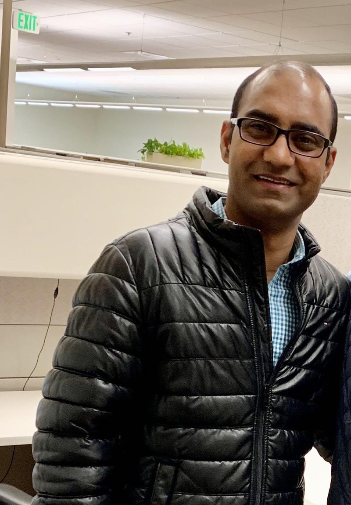

Which payers and accounts deserve our focus?
Payer segmentation built on clean hierarchies (MMIT, Payer Spine), covered-lives views, and contract performance tracking.
Data. Technology. Practical AI. Meaningful Impact.
I help life-sciences organizations turn payer, patient, and trade data into decisions that leadership and field teams can act on. Fifteen-plus years across Biogen, AbbVie, Genentech, and Eli Lilly, now leading payer analytics, patient and trade insights.

I work where data, technology, and business strategy meet, and I care most about the moment an insight changes what someone does next.
I started as a software engineer building SharePoint and .NET applications in India. From there I moved into Salesforce and Veeva CRM work for Eli Lilly, then into sales and channel data management at Kythera and Genentech, and into commercial applications and Agile product ownership at AbbVie.
At Biogen I lead Market Access and Research analytics: payer insights, patient access, trade and distribution reporting, sales trending, forecasting, and AI-enabled analytics. I own data sourcing and quality across our payer and commercial vendors, manage the SOWs, and present recommendations to senior stakeholders.
Outside of work, I build small AI prototypes to see where practical AI can remove repetitive work and make information easier to reach.
Payer pressure, affordability, and policy change all show up first in the data. These are the questions I help teams answer, and what I bring to each one.
Payer segmentation built on clean hierarchies (MMIT, Payer Spine), covered-lives views, and contract performance tracking.
Patient journey and specialty pharmacy analytics that link coverage, affordability, and time-to-therapy.
Trended channel and GTN reporting and data ready for scenario modeling when policy shifts.
EDI 852/867 onboarding, reconciliation, and inventory and demand views that hold up week to week.
Access-aware targeting through Veeva CRM, affiliation hierarchies, and dashboards built for the field.
Start with data quality and governance, then automate one measurable workflow at a time.
Executive dashboards, commercial performance, sales trending and forecasting, with data validation built in so the numbers hold up in the room.
AI-enabled reporting and automated data reconciliation at work; voice assistants, retrieval assistants, and workflow prototypes in my own lab.
Requirements, functional and technical specs, Agile product ownership, vendor and SOW management, and onsite-offshore team leadership.
Hands-on experience with the payer, channel, and commercial data that market access and commercial teams run on.
Turning payer and coverage data into a clear view of where patients can get therapy and what it costs to get them there.
Onboarding, validating, and trending sales data across the supply chain.
Payer
Prescription, claims & accounts
Platforms
Field operations
Data platforms & languages
BI & visualization
Analytics & AI
Most of my work follows the same path. The last step is the one that counts.
EDI 867, IQVIA, MMIT, claims, GPO. New vendors, new products, clear SOWs.
Profiling, reconciliation, and quality rules. Master data in Veeva Network.
SQL on Snowflake, payer hierarchies, and affiliations that match how the business thinks.
Power BI and Tableau products, automated refreshes, and self-service.
Access strategy, field focus, and forecasts that leadership can act on.
Professional work is described at a level that respects employer confidentiality. Lab projects are personal prototypes and are labeled as such.
MMIT · Payer Spine · Snowflake · Power BI · Tableau
EDI 850/852/867 · GPO · SQL · PL/SQL
Veeva Network / OpenData · HCOS · Veeva CRM
Veeva CRM · Salesforce · JIRA · Agile
LLM · Voice AI · Workflow automation
LLM · SQL · Data quality rules
Lead market access analytics, payer and commercial data quality, and AI-enabled reporting.
Data Lead for trade, claims, and GPO feeds; business owner for Veeva Network.
Salesforce and Veeva CRM roadmap, field deployments, Agile product ownership.
Sales and channel analytics, EDI 867 onboarding, commercial BI system.
Partner sales data onboarding, Salesforce and Veeva administration.
IMS DDD and Xponent data management, Salesforce and Veeva CRM development.
SharePoint and C# applications for enterprise clients.
A short daily read on AI adoption in biopharma Market Access & Research, with sources for every post.
New posts arrive every morning.
Open to conversations about commercial and market access analytics, data strategy, speaking, and practical AI in life sciences.